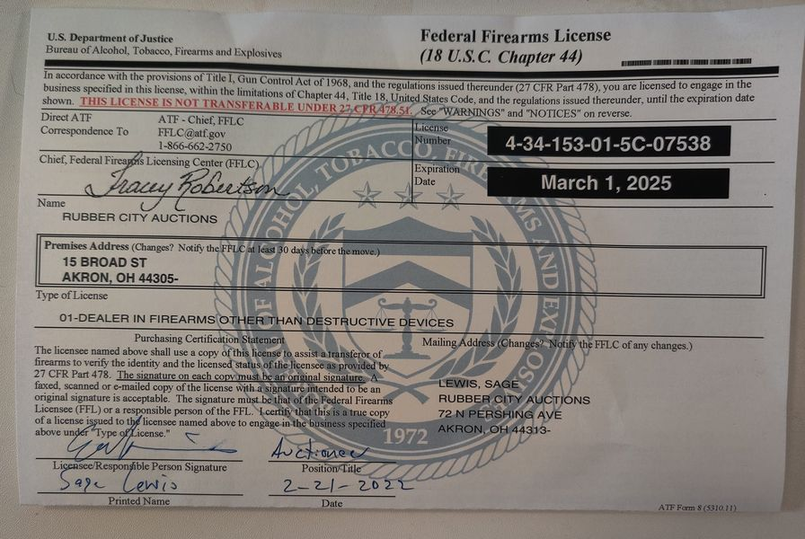

Mobile uploads
I just got my gun dealer license back. (I had let it expire because I wasn't using it.)
BUT! I have an idea I want to try. (and my ATF agent thought it was a good idea)
I want to buy guns (I've already bought 3) from people in the city that would rather have money than the gun. And then I will sell or auction off the guns to people that can pass a background check.
This way the gun gets off the street and goes into the hands of a person who is legally allowed to have the gun.
All 3 guns I bought were from people who had felonies and weren't legally allowed to have a gun.
So, if you have a gun that you want to sell for a good price please let me know.
And stay tuned for my next upcoming auction. It will be in early Spring.